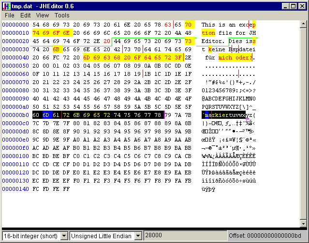

It was especially designed to work with large files (up to 8 million terabytes, if your OS supports that.) Usual hex editors load the whole file into memory (or into a temporary file) - that can take a while. JHEditor only reads that parts from the file that are needed at the moment. If you change the file, only the bytes you've changed are held in memory. So if you work on large files and make small changes this doesn't need much memory.
Insertions and deletions are handled "virtually" as well, so that an insert of one byte does not have to move all the rest of a file around. As copying and pasting larger blocks can still be quite time-consuming, ther is a concept called "split parts". You can specify these parts in the editor and save a few of them (in any order, even from different source files) into a new file, including any unsaved changes you made on this files. The "Save as..." command uses this by saving all split parts of the current file into a new one.
Since version 0.6 JHEditor supports Drag&Drop (for opening files) and file compares.
If JHEditor is slow on larger files (several Gigabytes), your antivirus program can be the culprit. See the README for details

If you use JHEditor with Java 1.3 oder 1.4, drop me a short email, please. If I do not receive any emails, the next version of JHEditor will require Java 1.5